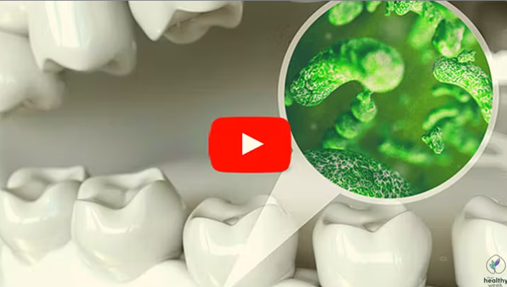

Top Dentist: This breakthrough "Microbe Reserch"Restore damage teeth and gums
(Watch now)


A top dentist, recemtly shared breakthrough reserch leading to an incredibley simple soution to restore gum and tooth health overnight, and it dosn't involve potrntially dangerous medication, oral hygiene products or dental treatments of any king.
This easy bedtime technique has sent shockwaves through the multi-billion dollar dental industry,after thousands of people utilizing this discovery have quickly eliminated signs of tooth decay, vleeding and receding gums, paque build up,infection and bad breath.
This long-term solution is so effective because it attacks the findamental cause of tooth decay and gum disease, rather then only treating the symptoms.
To learn this powerful secret that the dental industry doesn't want you to know, click the green button above or below.
IN THIS VIDEO YOU WILL LEARN
- What Your Tooth and Gum Age Is
- Without Ever Having To Pay For Expensive Treatment
- Backed By Science And Clinical Studies
- Taking Only A Few Seconds Every Evening

.png)